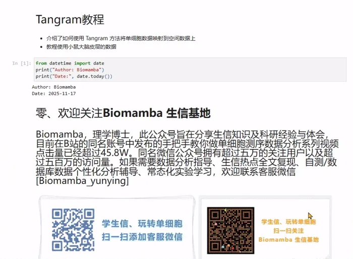
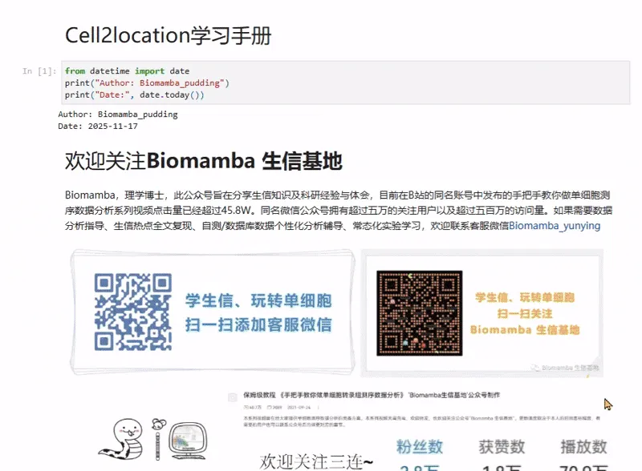

一文学会Tangram与Cell2location空转反卷积实战
原文：https://mp.weixin.qq.com/s?__biz=MzAwMzIzOTk5OQ==&mid=2247534882&idx=2&sn=787ff8d8548c512dd64f5e5f131d176f&chksm=9b3c3072ac4bb964af9813b995ee3d63f265ba3ee57ec3b8e0ecc219f1993e77016d44a3dea4#rd 合集：空间转录组

空间转录组数据去卷积分析手册

 由于主流的空间转录组并不能以真正的单细胞为分辨率检测细胞数据，因此需要通过空间转录组反卷积分析解析每个spot中细胞类型组成比例的过程，该分析的原理是基于单细胞参考数据集构建线性/概率模型，实现混合信号拆解，进而达到从混合表达信号中推断细胞类型空间分布模式的目的。工具简介：
由于主流的空间转录组并不能以真正的单细胞为分辨率检测细胞数据，因此需要通过空间转录组反卷积分析解析每个spot中细胞类型组成比例的过程，该分析的原理是基于单细胞参考数据集构建线性/概率模型，实现混合信号拆解，进而达到从混合表达信号中推断细胞类型空间分布模式的目的。工具简介：
1、Tangram是一种强大的深度学习工具，专门用于将单细胞RNA测序(scRNA-seq) 数据与空间转录组(ST)数据进行整合和对齐，实现细胞类型组成的反卷积（Deconvolution）。其核心目的是解决低分辨率空间技术（如Visium）中Spot信号混合的问题。
2、Cell2location是一种基于贝叶斯模型（Bayesian Model）的计算方法，专门为空间转录组（Spatial Transcriptomics,ST）数据设计。解决空间转录组数据中Spot信号混合的问题。Cell2location将每个Spot的总mRNA计数分解为构成该Spot的各种细胞类型的丰度（即，推断每个Spot中包含多少个某种特定类型的细胞）。
本教程基于Python完成，没有基础的小伙伴可见生信Python速查手册，自学有困难的小伙伴可见：Python实战-玩转空间转录组分析本教程基于Linux中的Jupyter环境演示，计算资源不足的同学可参考： 足够支持你完成硕博生涯的生信环境 配置一个心仪的工作站(硬件+环境配置) 独享服务器，生信分析不求人
本教程复现集锦 ：
 -Biomamba
-Biomamba

所见即所得
tangram学习手册以html文件格式提供，可在浏览器中打开并翻阅学习：

教程目录 ：
写在前面
一、Tangram介绍
1.1 Tangram：基于最优传输理论的空间反卷积方法
1.2 核心原理
1.3 工作流程
二、 代码实操 Ⅰ：Slide-seq
2.1 软件和数据准备
（1）GPU准备
（2）下载数据
2.2 加载空间数据
2.3 加载单细胞数据
2.4 准备映射
2.5映射
2.6下游分析
三、代码实操Ⅱ：10x Visium
3.1 软件和数据准备
3.2 加载空间转录组和单细胞参考数据
3.3 预处理
3.4 数据对齐
3.5 映射结果检查
3.6 通过对齐单细胞数据获得新的空间数据
3.7 精确反卷积
3.8 通过比对单细胞数据进行反卷积
环境信息
空间转录组教程全收录
欢迎致谢
文末下载链接中包含的内容：

测试文件约8.35GB ，大家注意按需下载！
cell2location学习手册以html文件格式提供，可在浏览器中打开并翻阅学习：

教程目录 ：
一、写在前面
二、Cell2location：空间转录组数据细胞类型解卷积工具
2.1 Cell2location简介与核心目标
2.2 Cell2location的工作流程与技术原理
2.3Cell2location的主要优势****
2.4 结果可视化
三、代码实操
3.1 加载安装的库
3.2 加载单细胞转录组参考数据
3.3 数据质控
3.4 获取参考数据集
3.5 参考数据集质控
3.6 参考细胞类型特征估计（Estimation of reference cell type signatures）------NB回归
3.7 模型训练（GPU可加速）
3.8 检查QC质量图表
3.9 加载训练好的 scRNA-seq 参考数据和回归模型
3.10 进行空间映射
3.11 可视化细胞类型丰度
3.12 下游分析
（1）通过聚类来区分不同组织区域
（2）非负矩阵分解 (NMF) 识别细胞区室 / 组织区域
（3）估计空间数据中每个基因的细胞类型特异性表达
环境信息
空间转录组教程全收录
欢迎致谢
文末下载链接中包含的内容

测试文件约6.76GB ，大家注意按需下载！

往期订阅


生信基地现已开放终身订阅，现已包含几十篇订阅资料，未来37年持续更新：那就开放一个终身订阅吧~
2025已更新订阅内容：
2025订阅须知《Cell》复现|中性粒细胞scRNA-seq图谱阐明抗肿瘤抗原呈递效力
《Cancer Cell》|时空单细胞揭示CRC的PD-1治疗免疫细胞动态
代码复现|吞噬作用增强肿瘤中巨噬细胞的氧化代谢和免疫抑制特征一文学会scRNA Velocity剪切速率分析
一文学会四种scRNA-seq轨迹分析
一文学会四种scRNA-seq细胞通讯分析
一文学会四种基因共表达网络分析
一文学会四种scRNA-seq拷贝数变异分析
分子批量对接与亲和力热图绘制
代码复现| scRNA-seq揭示人纤维化皮肤病中的成纤维细胞异质性与增殖
单细胞免疫组库测序(scTCR+scBCR)学习手册一文掌握WGBS分析流程
《NC》代码复现|snATAC联合scRNA-seq揭示小鼠肾脏细胞分化程序与疾病靶点
空间转录组数据基础分析手册
空间转录组|多样本整合分析手册
一文学会三种空转数据共表达网络分析 解锁前需阅读：2025订阅须知
解锁前需阅读：2025订阅须知
学习手册下载链接：
领取提取码请联系客服微信[Biomamba_zhushou]
本推送教程二维码：
https://pan.baidu.com/s/1j1xTPvFgLtTjjjO9z5s10g
整个订阅合集的百度云下载地址可见:
https://pan.baidu.com/s/1_Pjd4RjinDCWmwVtSfStFA
-Biomamba

如何联系我们

 留一个领取资料、开箱即用的单细胞分析镜像的微信号[Biomamba_zhushou]，方便各位随时交流。同时我们也构建了交流群矩阵，欢迎大家入群讨论。
大家可以阅读完这几篇之后添加给生信入门初学者的小贴士
没有检索，就没有发言权
留一个领取资料、开箱即用的单细胞分析镜像的微信号[Biomamba_zhushou]，方便各位随时交流。同时我们也构建了交流群矩阵，欢迎大家入群讨论。
大家可以阅读完这几篇之后添加给生信入门初学者的小贴士
没有检索，就没有发言权
已有生信基地联系方式的同学无需重复添加

 您点的每个赞和在看，我都认真当成了喜欢
您点的每个赞和在看，我都认真当成了喜欢